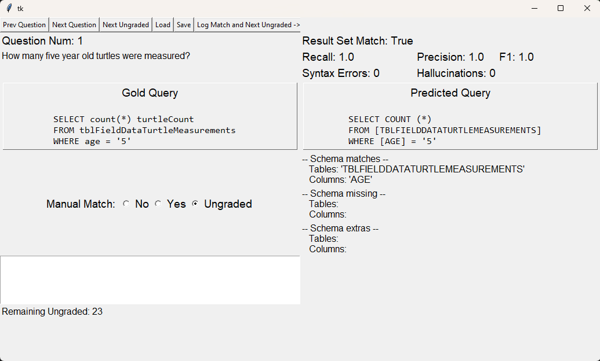

About SNAILS¶
What is SNAILS?¶
SNAILS is a set of NL-to-SQL-related artifacts designed to explore the effects of schema naming on LLM-based NL-to-SQL performance. It includes a set of real-world databases and associated natural language (NL) : SQL gold query pairs, human-labeled data containing naturalness classifications the tables and columns in the database collection, a model and method for ML-based naturalness classification, and prompting strategies for improving schema identifier naturalness.

Access SNAILS Artifacts¶
What SNAILS Isn’t:¶
SNAILS is not a fully-featured benchmark similar to Spider or BIRD that maintains a leaderboard, and provides a training, and dev dataset while also retaining a hidden test set. Instead SNAILS artifacts are a starting point for further research into schema-specific effects on NL-to-SQL. It can also be used to support the development of new NL-to-SQL methods. We encourage other researchers and developers to use our artifacts for their research objectives, and invite collaboration and feedback from the community.
Contact First Author¶
Email: kluoma@ucsd.edu
Installing SNAILS¶
Understanding that SNAILS is a collection of artifacts and example implementations of natural views and other concepts, installation isn’t a monolithic process with a defined path to system start. Instead, we offer steps here to retrieve the SNAILS artifacts and install dependencies.
Start by cloning the repository and installing dependencies:
git clone https://www.github.com/kyleluoma/SNAILS
python -m venv venv
venv/scripts/activate <or> source venv/bin/activate
pip install -r requirements.txt
PyTorch is required but we don’t include it in requirements.txt. This is so that you can acquire the appropriate configuration for your own environment.
Install the SNAILS database instances by following the steps in SNAILS databases
Add your own API keys to the following files in .local_example and move to the .local folder:
openai.json - Required for GPT 3.5 and GPT 4o SQL inference and schema renaming
vertex.json - Required for Gemini 1.5 pro SQL inference
huggingface.json - Required for retrieving the schema naturalness classifier
SNAILS artifacts¶
SNAILS databases¶
The SNAILS database collection is drawn from a variety of sources (Database Sources).
Installation instructions (Database Installation) will guide you through downloading and instantiating the MS SQL database backup files.
Database Sources¶
NPS IRMA Portal https://irma.nps.gov/Portal/. Accessed: April 2023.
ASIS_20161108_HerpInv_Database Robert Cook. 2016. Field Data for Assateague Island National Seashore Amphibian and Reptile Inventory. https://irma.nps.gov/DataStore/Reference/Profile/2236826. Accessed: April 2023.
ATBI Thomas Evans. 2015. Great Smoky Mountains All Taxa Biodiversity Inventory (ATBI) Plot Vegetation Monitoring Database. https://irma.nps.gov/DataStore/Reference/Profile/2221324. Accessed: April 2023
KlamathInvasiveSpecies Klamath Inventory and Monitoring Network. 2021. Exotic and Invasive Plants Monitoring Database. https://irma.nps.gov/DataStore/Reference/Profile/2288667. Accessed: April 2023.
PacificIslandLandbirds Seth Judge and Kevin Kozar. 2023. Pacific Island Network Landbird Monitoring Dataset. https://irma.nps.gov/DataStore/Reference/Profile/2300107. https://doi.org/10.57830/2300107 Accessed: April 2023.
CratersWildlifeObservations Charles Stefanic. 2021. Wildlife Observations Database: Craters of the Moon National Monument and Preserve 1921-2021. https://irma.nps.gov/DataStore/Reference/Profile/2192964. Accessed: April 2023.
NorthernPlainsFireManagement Ian Muirhead. 2021. Northern Great Plains Fire Management: FFI Database. https://irma.nps.gov/DataStore/Reference/Profile/2297267. Accessed: April 2023.
NTSB National Center for Statistics and Analysis. 2022. Overview of the 2021 Crash Investigation Sampling System. https://crashstats.nhtsa.dot.gov/Api/Public/ViewPublication/813397 Traffic Safety Facts Research Note. Report No. DOT HS 813 397.
NYSED_SRC2022 Report Card Database 2021-22. https://data.nysed.gov/files/essa/21-22/SRC2022.zip. Accessed: May 2023.
SBODemoUS Marie-Laurence Poujois. 2021. Localized Demo Databases Now Available for SAP Business One 10.0 FP 2011. https://blogs.sap.com/2021/01/29/localized-demo-databases-now-available-for-sap-business-one-10.0-fp-2011/. Accessed: April 2023
Database Installation¶
We offer the SNAILS database collection in both MS SQL and Sqlite formats.
To run any SNAILS reproducibility scripts, you must first download the MS SQL backup files here:
https://drive.google.com/file/d/1EMQmdNx-a20TfZSDdNkFPLmXVS48IB2b/view?usp=drive_link
If you’re running Windows, you can either use Docker or import the provided .bak files into a MS SQL server database following the steps here.
Once you’ve imported the .bak files into an MS SQL database, you’ll need to configure the .local/dbinfo.json file for your system’s login credentials. If this is too complicated, then consider using the Docker-based approach below.
For Linux, WSL, or Apple users, we recommend the Docker-based approach.
Download the
SNAILS_database_collection.tar.gzfrom the link above into./SNAILS_Artifacts/databases/In the
./SNAILS_Artifacts/databases/directory, Run:bash install_snails_db.sh bash run_docker_snails_db.sh
This will build a MS SQL docker image, copy the .bak files into the container, and unzip and import the .bak files into the database. It will also copy the required dbinfo.json file into the ./.local/ directory.
SNAILS SQlite is required for reproducing CodeS-based inference.
Download the collection and unzip into the ./db/snails_sqlite/ directory.
SNAILS Identifier Naturalness data¶
Dataset Generation¶
We made several different attempts at schema identifier naturalness classification including human scoring, heuristics-based, and machine learning. Ultimately, we generated a ground truth dataset by validating and, where needed, modifying labels classified by a finetuned GPT davinci classification model. Using this dataset, we then trained a local model based on Canine that outperforms the GPT-based model.
Dataset Download¶
The dataset can be accessed on our GitHub repository.
Naturalness Classifiers¶
snails_naturalness_classifier¶
- class CanineIdentifierClassifier(identifiers=pd.DataFrame())¶
A classifier for identifying word naturalness using a pre-trained text analysis model. Classifies words as Regular (label N1), Low (label N2), or Least (label N3) natural.
- Parameters:
identifiers (pd.DataFrame) – A DataFrame containing identifiers to classify.
- Variables:
model_name (str) – The name of the model used for classification.
checkpoint (int) – The checkpoint number of the model.
id2label (dict) – A dictionary mapping label IDs to label names.
label2id (dict) – A dictionary mapping label names to label IDs.
classifier (pipeline) – The sentiment analysis pipeline used for classification.
identifiers (pd.DataFrame) – A DataFrame containing identifiers to classify.
- do_batch_job(ident_df: pd.DataFrame = None, save_as_excel: bool = False, make_tag: bool = True)¶
Performs batch classification on the given DataFrame of identifiers.
- Parameters:
ident_df (pd.DataFrame or None) – The DataFrame of identifiers to classify. Defaults to None, in which case it uses
identifiers.save_as_excel (bool) – Whether to save the results as an Excel file.
make_tag (bool) – Whether to add a token tag to the text before classification.
- Returns:
None
- classify_identifier(identifier: str, make_tag: bool = True)¶
Classifies a single identifier.
- Parameters:
identifier (str) – The identifier to classify.
make_tag (bool) – Whether to add a token tag to the identifier before classification.
- Returns:
The classification result.
- Return type:
list
db_schema_classifier¶
- classify_db_schema(db_name, tagged=True, db_type='ms sql')¶
Classifies the naturalness of table and column names in a database schema. This relies on the SNAILS db_util.py or db_util_sqlite.py utilities which means that databases must be registered in the ./.local/dbinfo.json or dbinfo_sqlite.json files prior to use.
- Parameters:
db_name (str) – The name of the database to classify.
tagged (bool) – Whether to tag the identifiers.
db_type (str) – The type of the database, either ‘ms sql’ or ‘sqlite’.
- Raises:
ModuleNotFoundError – If the snails_naturalness_classifier module is not found.
- Returns:
A DataFrame containing the table names, table scores, column names, column scores, and model used.
- Return type:
pd.DataFrame
- classify_batch_with_canine(batch_filepath)¶
Classifies tables and columns in a batch file using the CanineIdentifierClassifier.
- Parameters:
batch_filepath (str) – The file path to the batch CSV file containing table and column names.
- Returns:
A DataFrame containing the table names, table scores, column names, column scores, and the model used for classification. If the input DataFrame contains a ‘DATABASE_NAME’ column, it will also be included in the output DataFrame.
- Return type:
pd.DataFrame
- main()¶
Main function to demonstrate the usage of the schema classification functions. This function sets a database name, then calls the
classify_db_schemafunction. Commented-out lines show alternative usage scenarios.
Classification Models¶
Model performance data is logged in the ./data/classifier-inference-results directory, and includes outputs and classification score calculations for the models described below.
Classes
N1: Regular
N2: Low
N3: Least
The Tagging Feature
If a model below is referred to as “tagged”, it means that we employed a feature we call character tagging implemented in tokenprocessing.
Canine
Training
Training was performed using the Transformers library with the Canine pretrained language model.
We finetuned the model using an Nvidia GTX 1080 GPU with 8GiB of VRAM using transformers libraries, CUDA 12.1 and Torch 2.0.1.
Collection 1 data
Generation 1 used the same human-generated training data as the davinci finetune in .csv format found in ./manual-scoring/gpt-data/
Collection 2 data
Generation 2 was trained on an expanded set of training data that was generated by the davinci fine tune and curated by human researchers:
./manual-scoring/canine2/
Inference
Inference is accomplished with the CanineIdentifierClassifier class: snails_naturalness_classifier.
This class assumes the availability of a canine-based model trained using the steps described above. The best-performing classifier is available on HuggingFace: https://huggingface.co/kyleluoma/SNAILS-word-naturalness-classifier
Classification Heuristics Our heuristics-based approach is called Word List Matching, and is implemented in word_list_matching.
GPT 3.5 Turbo Fewshot Classification
No training was required for the fewshot classification approach, we simply use the OpenAI API and a pre-written completions prompt which is located at ./prompts/fewshot-categoryexplanations.txt.
GPT Davinci Fine Tune | DEPRECATED
The GPT Davinci finetuned model is no longer available from OpenAI. We include this writeup for completeness.
Training
Finetuning was accomplished using the OpenAI API training endpoint.
Example command:
openai api fine_tunes.create -t .\manual-scoring\gpt-data\train_tagged_prepared.jsonl -m davinci --suffix "tagged_classifier"
Training data is in ./data/classifier-training-data/
Inference
Inference is no longer possible.
:: _naturalness_modified_identifiers:
Naturalness-Modified Identifiers¶
Dataset Description¶
Creation We created the naturalness-modified data using our schemarenamer artifacts. Each output from these tools was validated, and when necessary modified, by a human researcher.
Dataset Description The data are stored as .xlsx crosswalks that map the native identifier to higher and/or lower naturalness levels.
Columns
Column Name |
Description |
|---|---|
native_identifier |
The identifier as it exists in the SNAILS database. |
table_or_columns |
Indicates if the identifier is a table or column. |
source_database |
Database from which the identifier was extracted. |
native_naturalness |
The naturalness level of the native identifier. |
N1_identifier |
The Regular (N1) variant of the native identifier. |
N2_identifier |
The Low (N2) variant of the native identifier. |
N3_identifier |
The Least (N3) variant of the native identifier. |
Dataset Download¶
The dataset can be accessed on our GitHub repository.
Naturalness Modifier¶
Schema Identifier Transformation and Naturalness-Modified Identifier Generation
To better observe the effect of naturalness levels on linking performance, we create alternate versions of all identifiers in the benchmark datasets.
Naturalness modification is performed the using schemarenamer do_fewshot_identifier_transform function.
More natural to less natural¶
Creating a less natural version of a natural identifier is a task of abbreviation. Less natural identifiers should contain elements of the full words that they represent.
in cases of transformation from higher to lower naturalness levels, do_fewshot_identifier_transform passes the fewshot prompts in the ./prompts/ directory to our callgpt.call_gpt function:
Less natural to more natural¶
Less natural to more natural transformation makes use of the data_dict_interpreter. This program uses database metadata (xml, pdf, or csv format) and GPT fewshot prompting to expand abbreviated identifiers.
data_dict_interpreter¶
- class DataDictInterpreter(database_name: str = None, data_dict_file: str = None)¶
This class is used to interpret a data dictionary. This is a superclass. Subclasses exist for different document types.
- Parameters:
database_name (str or None) – The name of the database.
data_dict_file (str or None) – The path to the data dictionary file.
- Variables:
index (defaultdict[str, list[tuple[int, int]]]) – A dictionary mapping words to a list of locations in the document.
data_dict_file (str) – The path to the data dictionary file.
filename (str) – The name of the fewshot prompt file for a data dictionary.
call_gpt (function) – A function that takes a prompt and returns a GPT response.
- interactive_prompt_builder(num_examples: int = 5)¶
User interaction method to build a fewshot prompt for a data dictionary.
The interaction prompts the user to provide a valid database identifier for the document. The user is then prompted to confirm whether the generated identifier is a good example. If the user confirms the example is good, the example is added to the fewshot prompt. The user is then prompted to provide another valid database identifier for the document. This process repeats until the user has provided the desired number of examples. The user is then asked if the prompt should be saved to disk and used for the data dictionary.
- Parameters:
num_examples (int) – The number of examples to generate for the fewshot prompt.
- Returns:
None
- Return type:
None
- make_zero_shot_prompt(identifier: str, context_limit: int = 10) str¶
Generates a zero-shot prompt for a data dictionary.
This method generates a zero-shot prompt for a data dictionary. The prompt is generated using the identifier provided by the user and the context around the identifier in the data dictionary.
- Parameters:
identifier (str) – The identifier to generate a zero-shot prompt for.
context_limit (int) – The limit on the number of instances of the identifier referenced within the text of the data dictionary to include in the prompt.
- Returns:
A zero-shot prompt for the data dictionary.
- Return type:
str
- make_few_shot_prompt(identifier: str, context_limit: int = 10, verbose: bool = True) str¶
Generates a few-shot prompt for a data dictionary.
- Parameters:
identifier (str) – The identifier to generate a few-shot prompt for.
context_limit (int) – The limit on the number of instances of the identifier referenced within the text of the data dictionary to include in the prompt.
verbose (bool) – Whether to print verbose output.
- Returns:
A few-shot prompt for the data dictionary.
- Return type:
str
- getNaturalIdentifier(identifier: str, verbose: bool = False) str¶
Returns the natural identifier for a database identifier.
- Parameters:
identifier (str) – The identifier to get the natural identifier for.
verbose (bool) – Whether to print verbose output.
- Returns:
The natural identifier for the database identifier.
- Return type:
str
- get_context_around_identifier(identifier: str, beam_width: int = None) list¶
Returns the context around an identifier in a data dictionary.
- Parameters:
identifier (str) – The identifier to get the context around.
beam_width (int or None) – The number of characters/words to include on either side of the identifier.
- Returns:
A list of strings containing the context around the identifier.
- Return type:
list[str]
- index_dictionary_file(file_obj) defaultdict¶
Indexes a data dictionary file.
- Parameters:
file_obj (Varies depending on subclass.) – The file object to index.
- Returns:
A defaultdict mapping words to a list of locations in the document.
- Return type:
defaultdict[str, list]
- class PdfDataDictInterpreter(database_name: str = None, data_dict_file: str = None)¶
This class is used to interpret a PDF data dictionary. Inherits from
DataDictInterpreter.- Variables:
pdf (PdfReader) – A PdfReader object representing the PDF data dictionary.
beam_width (int) – The number of characters to include on either side of the identifier.
- get_context_around_identifier(identifier: str, beam_width: int = None) list¶
- .. :inheritdoc:: DataDictInterpreter.get_context_around_identifier
- index_dictionary_file(file_obj: PdfReader) defaultdict¶
- .. :inheritdoc:: DataDictInterpreter.index_dictionary_file
- class XmlDataDictInterpreter(database_name: str = None, data_dict_file: str = None)¶
This class is used to interpret an XML data dictionary. Inherits from
DataDictInterpreter.- Variables:
xml_text (str) – A string containing the text of the XML data dictionary.
xml_list (list[str]) – A list of words in the XML data dictionary.
beam_width (int) – The number of words to include on either side of the identifier.
- get_context_around_identifier(identifier: str, beam_width: int = None) list¶
- .. :inheritdoc:: DataDictInterpreter.get_context_around_identifier
- index_dictionary_file(file_obj) defaultdict¶
- .. :inheritdoc:: DataDictInterpreter.index_dictionary_file
- class CsvDataDictInterpreter(database_name: str = None, data_dict_file: str = None)¶
This class is used to interpret a CSV data dictionary. Inherits from
DataDictInterpreter.- Variables:
csv (str) – The CSV data as a string.
csv_header (str) – The header row of the CSV.
beam_width (int) – The number of lines to include around the identifier.
- get_context_around_identifier(identifier: str, beam_width: int = None) list¶
- .. :inheritdoc:: DataDictInterpreter.get_context_around_identifier
- index_dictionary_file(file_obj) defaultdict¶
- .. :inheritdoc:: DataDictInterpreter.index_dictionary_file
- class JsonDataDictInterpreter(database_name: str = None, data_dict_file: str = None)¶
This class is used to interpret a JSON data dictionary. Inherits from
DataDictInterpreter.- Variables:
json_text (str) – The JSON data as a string.
json_list (list[str]) – A list of words in the JSON data.
beam_width (int) – The number of words to include around the identifier.
- get_context_around_identifier(identifier: str, beam_width: int = None) list¶
- .. :inheritdoc:: DataDictInterpreter.get_context_around_identifier
- index_dictionary_file(file_obj) defaultdict¶
- .. :inheritdoc:: DataDictInterpreter.index_dictionary_file
- class DataDictInterpreterFactory(database_name: str)¶
Factory class for creating DataDictInterpreter objects.
- Parameters:
database_name (str) – The name of the database.
- get_current_interpreter() DataDictInterpreter¶
Returns the current DataDictInterpreter object.
- Returns:
The current DataDictInterpreter object.
- Return type:
- get_new_interpreter(database_name: str) DataDictInterpreter¶
Creates and returns a new DataDictInterpreter object based on the database name.
- Parameters:
database_name (str) – The name of the database.
- Returns:
A new DataDictInterpreter object.
- Return type:
SNAILS NL Question - Gold SQL Query dataset¶
Question - query pairs are stored as executable .sql files with questions entered as SQL comments.
Each question is delinated by a ‘;’ expression terminator.
In this repository, we store them in a .zip file ./queries/NL-Questions-and-Gold-Queries.zip to avoid inadvertent inclusion in future LLM training data sets.
If you opt to use these in your own projects, please avoid publishing them where they can be scraped.
Example pair:
-- 5: How many events observed at least some stage of decay?
select count(distinct Event_ID)
from tbl_Deadwood
;
To run SNAILS reproducibility scripts, you don’t need to interact with or manipulate the gold query file. load_nl_questions handles this for you.
Natural Views¶
With natural views, we exploit the SQL view concept and map high naturalness identifiers to their native (possibly lower naturalness) representations.
This pipeline requires the snails_naturalness_classifier, schemarenamer, and natural_view_builder modules.
The Schema classification/modification, and view creation script is an end-to-end example of how to use SNAILS artifacts to improve database naturalness.
Reproducing SNAILS Experiments¶
SNAILS experiments can be re-run using the provided Jupyter notebooks. We also provide a Tkinter GUI-based SQL validation tool that should be used after executing notebook 1 and before running the analysis in notebook 2.
Manual SQL Correctness Validation Tool¶
Because true semantic equivalence between a Gold and Predicted query is, more-or-less, unsolvable, we leave this task to the intrepid researcher. To reduce the pain involved in SQL-SQL comparisons, we created a simple TKinter-based GUI-based app.
Open the app from the root directory:
python ./src/query_manual_validation.py
You should be greeted by a GUI window that looks similar to:
The Validation Proces:
- Load a performance annotation file by pressing the [Load] button.
NOTE: The load window defaults to ./data/nl-to-sql-performance_annotations/pending_evaluation/ which is the correct location.
Cycle through the ungraded queries that achieved result set matching by pressing the [Next Ungraded] button.
For each ungraded query, compare the Gold and Predicted varients and adjust the Manual Match score using the radio buttons.
- Pressing [Next Ungraded] or [Next Question] saves your input.
NOTE: Alternately, for correct queries, pressing [Log Match and Next Ungraded] marks the query as correct and then loads the next ungraded query.
- Once Remaining Ungraded == 0, save the file by pressing the [Save] button.
NOTE: the save window defaults to ./data/nl-to-sql-performance_annotations/ which is the correct location to save.
SNAILS Reproducibility Notebooks¶
The SNAILS repository contains 10 numbered Jupyter notebooks in the root of the project. Notebooks 1 - 3 must be run in-sequence. Notebooks 4 - 10 may be run in any order.
NOTE on database hosting: Reproduction requires an MS SQL database. This can either be hosted natively on a Windows OS, or via Docker (requires Docker installation) and the installation scripts provided in the archive.
Before running any notebooks, you must install dependences (Installing SNAILS) and instantiate the SNAILS databases (SNAILS databases).
- Run NL-to-SQL Inference and Auto Scoring: Generates and evaluates SQL queries for both execution accuracy and schema linking performance. Outputs to
./data/nl-to-sql-performance_annotations/pending_evaluation/. NOTE: After running notebook 1 and prior to running notebook 2 analysis, manually review the generated SQL using the manual validation tool (Manual SQL Correctness Validation Tool).
- Run NL-to-SQL Inference and Auto Scoring: Generates and evaluates SQL queries for both execution accuracy and schema linking performance. Outputs to
Run Statistical Tests and Create Charts: Loads validated performance annotations from
./data/nl-to-sql-performance_annotations/and generates statistical tests and charts.Run Identifier-Focused Analysis: Loads validated performance annotations from
./data/nl-to-sql-performance_annotations/and provides an identifier-focused schema linking performance metric.Tokenizer Analysis: Tokenizes SNAILS identifiers and explores their properties.
Token Naturalness Analysis: Explores the alignment of tokens to natural language.
Naturalness Comparisons: Compares naturalness of SNAILS, Spider, Bird, and SchemaPile.
SchemaPile Naturalness: ETL scripts for SchemaPile extraction and evaluation.
CodeS Query Execution and Selection: Augments CodeS process to select the first correct SQL.
DINSQL CodeS Schema Subsetting Analysis: Evaluates schema subsets generated by CodeS and DINSQL.
Spider Query Analysis: Creates performance metrics for Spider DEV (Native and modified) inference.
src¶
end_to_end_data_prep_and_prediction¶
- main(model: str, service: str, naturalness: str, database: str, bypass_nl_sql_inference: bool = True, db_list_file: str = '.local/dbinfo.json')
Executes the main logic for evaluating NL-to-SQL performance.
- Parameters:
model – The name of the NL-to-SQL model.
service – The name of the service providing the model.
naturalness – The naturalness level of the schema (e.g., “NATIVE”, “N1”, “N2”, “N3”).
database – The name of the database to use.
bypass_nl_sql_inference – Whether to bypass NL-to-SQL inference and load predictions from a file.
db_list_file – Path to the database information JSON file.
- Raises:
FileNotFoundError – If bypass_nl_sql_inference is True and the predicted queries file is not found.
- mp_query_parse_function(query_data: tuple) tuple¶
Parses a SQL query using an external Java tool and returns its statistics.
- Parameters:
query_data – A tuple containing the query number, the SQL query string, and the SQL dialect.
- Returns:
A tuple containing the query number and a dictionary of query statistics.
- mp_schema_linking_eval(data: tuple) tuple¶
Evaluates schema linking by comparing gold and predicted queries.
- Parameters:
data – A tuple containing the query number, the gold query, and the predicted query.
- Returns:
A tuple containing the query number and a dictionary of schema linking evaluation results.
- nl_to_sql_generation(q_nl_df: pd.DataFrame, bypass: bool = False, naturalness: str = None, db_name: str = None, config_dict: dict = None, nat_cat_dict: dict = None, db_info: dict = None, db_list_file: str = '.local/dbinfo.json', db_util=src.util.db_util) pd.DataFrame¶
Generates SQL queries from natural language questions.
- Parameters:
q_nl_df – DataFrame containing natural language questions and other information.
bypass – Whether to bypass NL-to-SQL generation and load from file.
naturalness – Naturalness level for schema elements.
db_name – Name of the database.
config_dict – Configuration dictionary.
nat_cat_dict – Dictionary mapping naturalness levels to numeric values.
db_info – Database information dictionary.
db_list_file – Path to database information JSON file.
db_util – Database utility module.
- Returns:
DataFrame with generated SQL queries.
natural_view_builder¶
- class NaturalViewBuilder(xwalk_directory: str = './schema-xwalks/consolidated_and_validated')¶
A class used to build natural views for a database using crosswalks.
- Parameters:
xwalk_directory (str) – The directory where the crosswalk files are stored. Defaults to “./schema-xwalks/consolidated_and_validated”.
- Variables:
nat_label_lookup (dict) – A dictionary mapping naturalness levels to their labels.
nat_num_lookup (dict) – A dictionary mapping naturalness labels to their levels.
- NaturalViewBuilder.initialize_db_nl_schema(database_name: str) None¶
Initializes the natural language schema in the specified database.
This method performs the following steps:
Executes the SQL script to create the natural language schema.
Executes the SQL script to create a within-database naturalness crosswalk
- Parameters:
database_name (str) – The name of the database where the schema will be initialized.
- Raises:
ProgrammingError – If there is an error executing the SQL script to create the schema.
- Returns:
None
- NaturalViewBuilder.populate_db_nl_tables(database_name: str, xwalk_directory: str = None) None¶
Populates the database natural language tables with cross-references between native and natural identifiers for tables and columns.
- Parameters:
database_name (str) – The name of the database to populate.
xwalk_directory (str, optional) – The directory where the crosswalk Excel file is located. If not provided, defaults to self.xwalk_directory.
- Returns:
None
- NaturalViewBuilder.create_views_in_database(database_name: str, naturalness_level: str = None) None¶
Creates views in the specified database. If a naturalness level is provided, it creates a schema for that level and builds the views within that schema. Otherwise, it builds the views in the default schema.
- Parameters:
database_name (str) – The name of the database where views will be created.
naturalness_level (str, optional) – The level of naturalness for the views. Defaults to None.
- Returns:
None
- NaturalViewBuilder.build_natural_view_queries(database_name: str, target_schema: str = 'dbo', xwalk_directory: str = None, view_schema_name: str = 'db_nl', naturalness_level: str = 'N1', xwalk_df: pandas.DataFrame = None) list¶
Builds SQL queries to create natural views for tables in a SQL Server database.
- Parameters:
database_name (str) – The name of the database to query.
target_schema (str, optional) – The schema of the target tables. Defaults to “dbo”.
xwalk_directory (str, optional) – The directory containing the crosswalk files. Defaults to None.
view_schema_name (str, optional) – The schema name for the views. Defaults to “db_nl”.
naturalness_level (str, optional) – The level of naturalness for the identifiers. Defaults to “N1”.
xwalk_df (pandas.DataFrame, optional) – The crosswalk dataframe. If None, it reads from the Excel file. Defaults to None.
- Returns:
A list of SQL view creation queries.
- Return type:
list
nl_to_sql_inference_and_prompt_generation¶
- do_single_question(original_prompt, use_database, question, xwalk_directory=None, column_naturalness=0, table_naturalness=0, log=True, filename_suffix='GPT-FT', filename_prefix='', task='query', service='openai', model_name='GPT-3.5', db_type='sql server', db_list_file='.local/dbinfo.json')¶
Executes a single natural language question against a specified database using a specified AI service and generates a predicted SQL query.
- Parameters:
original_prompt (str) – The initial prompt to be used.
use_database (str) – The database to query.
question (str) – The question to be appended to the prompt.
xwalk_directory (str, optional) – Directory for crosswalk files. Defaults to None.
column_naturalness (int, optional) – Level of naturalness for columns. Defaults to 0.
table_naturalness (int, optional) – Level of naturalness for tables. Defaults to 0.
log (bool, optional) – Whether to log the attempt. Defaults to True.
filename_suffix (str, optional) – Suffix for filenames. Defaults to ‘GPT-FT’.
filename_prefix (str, optional) – Prefix for filenames. Defaults to ‘’.
task (str, optional) – The task to perform (‘query’ or ‘tables’). Defaults to ‘query’.
service (str, optional) – The AI service to use (‘openai’, ‘google-vertex’, ‘google-palm’, ‘code-llama-aws’, ‘togetherai’). Defaults to ‘openai’.
model_name (str, optional) – The model name to use. Defaults to ‘GPT-3.5’.
db_type (str, optional) – The type of database (‘sql server’ or ‘sqlite’). Defaults to “sql server”.
db_list_file (str, optional) – Path to the database list file. Defaults to “.local/dbinfo.json”.
- Returns:
A dictionary containing the prompt, SQL response, result dataframe, naturalness, and denaturalized response.
- Return type:
dict
- naturalize_prompt(schema_prompt, db_name, xwalk_directory='./db/schema-xwalks/consolidated_and_validated/', column_naturalness=0, table_naturalness=0, filename_suffix='GPT-FT', filename_prefix='')¶
Naturalize the prompt by replacing table and column names with natural language names.
- Parameters:
schema_prompt (str) – The prompt to naturalize.
db_name (str) – The name of the database on which the resulting query will be run.
xwalk_directory (str, optional) – The directory in which the crosswalk files are stored. Defaults to ‘./db/schema-xwalks/consolidated_and_validated/’.
column_naturalness (int, optional) – The level of naturalness to use for column names. Defaults to 0.
table_naturalness (int, optional) – The level of naturalness to use for table names. Defaults to 0.
filename_suffix (str, optional) – The suffix to use for the crosswalk files. Defaults to ‘GPT-FT’.
filename_prefix (str, optional) – The prefix to use for the crosswalk files. Defaults to ‘’.
- Returns:
A tuple containing a dictionary with the naturalness levels and the naturalized schema prompt.
- Return type:
tuple[dict, str]
- denaturalize_query(query, naturalness, xwalk_directory='./db/schema-xwalks/consolidated_and_validated/', db_name='PacificIslandLandbirds', filename_suffix='GPT-FT', filename_prefix='', syntax='tsql', target_naturalness='native')¶
Denaturalize a query by replacing natural language table and column names with their native identifiers.
- Parameters:
query (str) – The query to denaturalize.
naturalness (dict) – A dictionary with keys ‘table’ and ‘column’ and values corresponding to the naturalness level used for each.
xwalk_directory (str, optional) – The directory in which the crosswalk files are stored.
db_name (str, optional) – The name of the database on which the resulting query will be run. Defaults to ‘PacificIslandLandbirds’.
filename_suffix (str, optional) – The suffix to use for the crosswalk files. Defaults to ‘GPT-FT’.
filename_prefix (str, optional) – The prefix to use for the crosswalk files. Defaults to ‘’.
syntax (str, optional) – The SQL syntax to use (‘tsql’ or ‘sqlite’). Defaults to ‘tsql’.
target_naturalness (str, optional) – The target naturalness level. Defaults to “native”.
- Returns:
The denaturalized query.
- Return type:
str
- log_attempt(prompt, response, result_df, database, model_name, naturalness={'table': 0, 'column': 0}, denaturalized_response=None)¶
Logs the attempt to a file.
- Parameters:
prompt (str) – The prompt used.
response (str) – The response received.
result_df (pandas.DataFrame) – The result dataframe.
database (str) – The database used.
model_name (str) – The model name used.
naturalness (dict, optional) – The naturalness level used. Defaults to {‘table’: 0, ‘column’: 0}.
denaturalized_response (str, optional) – The denaturalized response. Defaults to None.
- denaturalize_query_test()¶
Test function for denaturalize_query.
- do_single_question_test()¶
Test function for do_single_question.
query_manual_evaluation¶
- separate_by_line(query)¶
Formats a SQL query string for better readability by adding newlines before keywords.
- Parameters:
query (str) – The input SQL query string.
- Returns:
The formatted query string.
- Return type:
str
- clean(elmnt)¶
Removes set notation characters from a string.
- Parameters:
elmnt (str) – The input string.
- Returns:
The cleaned string.
- Return type:
str
- evaluate_queries_in_workbook(init_file_open_dir=None, init_filename=None)¶
Opens a GUI window to evaluate SQL queries stored in an Excel workbook.
- Parameters:
init_file_open_dir (str, optional) – Initial directory to open the workbook from. Defaults to None.
init_filename (str, optional) – Initial filename of the workbook to open. Defaults to None.
- Returns:
The annotated workbook as a pandas DataFrame.
- Return type:
pd.DataFrame
- class DfVariable(tk.Variable)¶
A Tkinter variable subclass to store and manage pandas DataFrames.
- Parameters:
value (pd.DataFrame, optional) – The initial DataFrame value. Defaults to None.
- get()¶
Returns the stored DataFrame.
- Returns:
The DataFrame.
- Return type:
pd.DataFrame
- set(value)¶
Sets the DataFrame value.
- Parameters:
value (pd.DataFrame) – The new DataFrame.
query_profiler¶
- class QueryProfiler¶
A class to parse and profile queries using our java-based query parser analyzer.
- Variables:
__jar_path (str) – The path to the jar file for the query parser analyzer.
query (str) – The query to be parsed and profiled.
tree (dict) – The tree representation of the query.
stats (dict) – The statistics of the query.
- profile_query(query: str) dict¶
Parses and profiles the query.
- Parameters:
query (str) – The query to be parsed and profiled.
- Returns:
A dictionary containing the parse tree and statistics of the query.
- Return type:
dict
- get_identifiers_and_labels(query=None, distinct=True, include_brackets=True) dict¶
Returns a dictionary of the identifiers and labels in the query.
- Parameters:
query (str or None) – The query to be parsed (optional, defaults to self.query).
distinct (bool) – Whether to return distinct identifiers (default is True).
include_brackets (bool) – Whether to include brackets in identifiers (default is True).
- Returns:
A dictionary containing lists of tables, columns, logical operators, functions, and a dictionary of clauses.
- Return type:
dict
- get_identifiers_and_labels_df(query=None, query_num=-1, include_brackets=True) pandas.DataFrame¶
Returns a dataframe of the identifiers and labels in the query.
- Parameters:
query (str or None) – The query to be parsed (optional, defaults to self.query).
query_num (int) – The query number (default is -1).
include_brackets (bool) – Whether to include brackets in identifiers (default is True).
- Returns:
A Pandas DataFrame containing the query number, identifier type, and identifier value.
- Return type:
pandas.DataFrame
- tag_query(query: str, syntax: str = 'tsql') dict¶
Tags a query’s table and column names using the java-based query parser analyzer.
- Parameters:
query (str) – The query to be tagged.
syntax (str) – The syntax of the query (default is “tsql”). Available options: “tsql”, “sqlite”.
- Returns:
A dictionary containing the tagged query, table aliases, and column aliases.
- Return type:
dict
- __parse_query(query: str, syntax: str = 'mssql') dict¶
Parses a query using the java-based query parser analyzer.
- Parameters:
query (str) – The query to be parsed.
syntax (str) – The syntax of the query (default is “mssql”). Currently only “mssql” is supported.
- Returns:
A dictionary containing the parse tree and statistics of the query.
- Return type:
dict
- parse_tree_pretty_print(tree=None) None¶
Prints a formatted representation of the parse tree.
- Parameters:
tree (dict or None) – The parse tree to print (optional, defaults to self.tree).
- __single_obj_dict_to_tuple(dict_in) tuple¶
Converts a single-key dictionary to a tuple.
- Parameters:
dict_in (dict) – The dictionary to convert.
- Returns:
A tuple containing the key and value of the input dictionary.
- Return type:
tuple
- tag_query_test() None¶
Tests the
tag_querymethod.
- profile_query_test() None¶
Tests the
profile_querymethod.
- print_tagged_query() None¶
Prints a tagged query and its statistics.
- all_tests() None¶
Runs all test functions.
schema_graph¶
- class SchemaGraph(database_name: str, repair_constraints: bool = True, use_single_starting_table_for_connections: bool = False)¶
A class to represent a schema graph for a database.
- Parameters:
database_name (str) – The name of the database.
repair_constraints (bool) – A flag indicating whether to repair constraints. Defaults to True.
use_single_starting_table_for_connections (bool) – A flag indicating whether to use a single starting table for connections. Defaults to False.
- Variables:
manual_pkfk (dict) – A dictionary containing manual primary key and foreign key relationships for specific databases.
database (str) – The name of the database.
repair_constraints (bool) – A flag indicating whether to repair constraints.
single_starting_table (bool) – A flag indicating whether to use a single starting table for connections.
edge_type_weights (dict) – A dictionary containing weights for different types of edges.
vertex_colors (dict) – A dictionary containing colors for different types of vertices.
pkfk_df (pandas.DataFrame) – A DataFrame containing primary key and foreign key relationships.
orphan_tables (list) – A list of orphan tables.
vertice_type_lookup (dict) – A dictionary for looking up vertex types.
vertice_name_lookup (dict) – A dictionary for looking up vertex names.
name_vertice_lookup (dict) – A dictionary for looking up vertex IDs by name.
all_vertices (list) – A list of all vertices.
edges (list) – A list of edges in the graph.
edge_type_lookup (dict) – A dictionary for looking up edge types.
edge_weight_lookup (dict) – A dictionary for looking up edge weights.
schema_graph (igraph.Graph) – The schema graph.
- _construct_graph() igraph.Graph¶
Constructs the schema graph.
- Returns:
The schema graph.
- Return type:
igraph.Graph
- _construct_pkfk_dataframe() pandas.DataFrame¶
Constructs the primary key and foreign key DataFrame.
- Returns:
The primary key and foreign key DataFrame.
- Return type:
pandas.DataFrame
- _construct_orphan_table_list(pkfk_df: pandas.DataFrame = None) list¶
Constructs the list of orphan tables.
- Parameters:
pkfk_df (pandas.DataFrame) – The primary key and foreign key DataFrame. Defaults to None.
- Returns:
The list of orphan tables.
- Return type:
list
- _construct_vertice_lookup_dicts(pkfk_df: pandas.DataFrame = None, orphans: list = None) dict¶
Constructs dictionaries for vertex lookups.
- Parameters:
pkfk_df (pandas.DataFrame) – The primary key and foreign key DataFrame. Defaults to None.
orphans (list) – The list of orphan tables. Defaults to None.
- Returns:
A dictionary containing vertex lookup dictionaries.
- Return type:
dict
- _construct_edges(pkfk_df: pandas.DataFrame = None, all_vertices: list = None, name_vertice_lookup: dict = None, vertice_name_lookup: dict = None) dict¶
Constructs the edges of the graph.
- Parameters:
pkfk_df (pandas.DataFrame) – The primary key and foreign key DataFrame. Defaults to None.
all_vertices (list) – The list of all vertices. Defaults to None.
name_vertice_lookup (dict) – The dictionary for looking up vertex IDs by name. Defaults to None.
vertice_name_lookup (dict) – The dictionary for looking up vertex names. Defaults to None.
- Returns:
A dictionary containing edge data.
- Return type:
dict
- _repair_constraints(pkfk_df: pandas.DataFrame) pandas.DataFrame¶
Repairs constraints in the primary key and foreign key DataFrame.
- Parameters:
pkfk_df (pandas.DataFrame) – The primary key and foreign key DataFrame.
- Returns:
The repaired primary key and foreign key DataFrame.
- Return type:
pandas.DataFrame
- get_schema_identifiers_between_tables(table_names: list) dict¶
Gets schema identifiers between tables.
- Parameters:
table_names (list) – A list of table names.
- Returns:
A dictionary where keys are table names and values are lists of column names.
- Return type:
dict
- get_table_connections(table_names: list) dict¶
Gets table connections.
- Parameters:
table_names (list) – A list of table names.
- Returns:
A dictionary containing connection information.
- Return type:
dict
- get_connecting_vertices_and_edges(vertices: list, single_starting_table: bool = None) dict¶
Gets connecting vertices and edges.
- Parameters:
vertices (list) – A list of vertices.
single_starting_table (bool) – Whether to use a single starting table. Defaults to None.
- Returns:
A dictionary containing connecting vertices and edges.
- Return type:
dict
schema_linking_eval¶
- compare_query_schema_elements(gold: str, predicted: str, verbose: bool = False) dict¶
Compares the schema elements (tables and columns) of two SQL queries and calculates precision, recall, and F1 score.
- Parameters:
gold (str) – The gold standard SQL query.
predicted (str) – The predicted SQL query.
verbose (bool) – If True, prints detailed comparison results. Defaults to False.
- Returns:
A dictionary containing matching, missing, and extra tables and columns, along with precision, recall, and F1 score.
- Return type:
dict
- mp_compare_query_schema_elements(q_nl_df: pd.DataFrame) dict¶
Compares query schema elements in a DataFrame using multiprocessing.
- Parameters:
q_nl_df (pd.DataFrame) – A DataFrame with ‘query_gold’, ‘query_predicted’, and ‘number’ columns.
- Returns:
A dictionary where keys are query numbers and values are comparison results.
- Return type:
dict
- update_scores_in_existing_results(filename)¶
Updates precision and F1 scores in an existing Excel file.
- Parameters:
filename (str) – The path to the Excel file.
- compare_queries()¶
Compares two example SQL queries using
compare_query_schema_elements.
schemarenamer¶
- schemarenamer.main()¶
Executes the main logic of the script. This includes classifying the database schema, performing schema renaming, and saving the results to an Excel file.
- no-index:
- schemarenamer.transform_score_df(score_df: pandas.DataFrame) pandas.DataFrame¶
Transforms the input score DataFrame to combine table and column scores, lowercase identifiers, and remove duplicates.
- Parameters:
score_df (pandas.DataFrame) – DataFrame containing table and column scores.
- Returns:
Transformed DataFrame with combined scores.
- Return type:
pandas.DataFrame
- schemarenamer.do_schema_renaming(database_name='PacificIslandLandbirds', score_lookup_file='./data/gold-data/identifier-scores-evaluated-5-9-2024.xlsx', continuous_write=False, db_type='ms sql', db_classifier_score_df=None, only_most_natural=False, verbose=True) pandas.DataFrame¶
Renames schema identifiers (tables and columns) in a database based on human-evaluated naturalness scores.
- Parameters:
database_name (str) – The name of the database. Defaults to “PacificIslandLandbirds”.
score_lookup_file (str) – Path to the Excel file containing human-evaluated scores. Defaults to “./data/gold-data/identifier-scores-evaluated-5-9-2024.xlsx”.
continuous_write (bool) – If True, writes logs continuously. Defaults to False.
db_type (str) – The type of the database (“ms sql” or “sqlite”). Defaults to “ms sql”.
db_classifier_score_df (pandas.DataFrame or None) – DataFrame with classifier scores. If None, reads from score_lookup_file. Defaults to None.
only_most_natural (bool) – If True, only generates the most natural identifier. Defaults to False.
verbose (bool) – If True, prints progress information. Defaults to True.
- Returns:
DataFrame containing original and generated identifiers with scores and errors.
- Return type:
pandas.DataFrame
: .. py:function:: do_fewshot_identifier_transform(identifier, naturalness, data_dict_interpreter=None, only_most_natural=False, verbose=True, gpt_model=”gpt-4o”) -> dict
Transforms a given identifier to different naturalness levels using few-shot prompting and a data dictionary interpreter.
- param identifier:
The identifier to transform.
- type identifier:
str
- param naturalness:
The original naturalness level of the identifier (e.g., “N1”, “N2”, “N3”).
- type naturalness:
str
- param data_dict_interpreter:
An instance of DataDictInterpreter for retrieving natural identifiers. Defaults to None.
- type data_dict_interpreter:
SNAILS_Artifacts.naturalness_modifier .data_dict_reader.DataDictInterpreter or None
- param only_most_natural:
If True, only generates the most natural identifier. Defaults to False.
- type only_most_natural:
bool
- param verbose:
If True, prints progress information. Defaults to True.
- type verbose:
bool
- param gpt_model:
The GPT model to use. Defaults to “gpt-4o”.
- type gpt_model:
str
- return:
A dictionary containing the transformed identifiers for different naturalness levels.
- rtype:
dict
semantic_compare¶
- record_evaluation(result_df, query_id, result, message)¶
Updates the result DataFrame with the evaluation outcome.
- Parameters:
result_df (pandas.DataFrame) – DataFrame containing query results.
query_id (str) – Identifier of the query being evaluated.
result (str) – The evaluation result (“TRUE”, “FALSE”, or “UNDETERMINED”).
message (str) – A message explaining the evaluation result.
- Returns:
The updated result DataFrame.
- Return type:
pandas.DataFrame
- compare_gold_to_generated(gold, generated, database_name, db_type='ms-sql', db_list_file='./local/db_info.json')¶
Compares gold standard and generated SQL queries for semantic equivalence.
- Parameters:
gold (str) – The gold standard SQL query.
generated (str) – The generated SQL query.
database_name (str) – The name of the database to query.
db_type (str, optional) – The type of the database (“ms-sql”, “sqlite”, or “tsql”).
db_list_file (str, optional) – Path to the database connection information JSON file.
- Returns:
A dictionary containing the equivalence result and reason.
- Return type:
dict
- do_batch_compare(database_name, result_file)¶
Performs a batch comparison of generated SQL queries against gold standards.
- Parameters:
database_name (str) – The name of the database to query.
result_file (str) – Path to the Excel file containing queries and results.
word_list_matching¶
- word_list_matching.debug_print(*args, doprint=True)¶
Prints arguments if the debug flag is set and doprint is True.
- Parameters:
args – Variable length argument list.
doprint (bool) – Boolean flag to control printing.
- Raises:
TypeError – if doprint is not a boolean.
- word_list_matching.main()¶
Main function to interact with the user and calculate naturalness.
Gets user input, tokenizes it, evaluates naturalness, and exports results.
- No-index:
- class word_list_matching.NaturalnessCalculator(wordlist_file='./data/words/words', excel_file=None)¶
Calculates the naturalness of words and identifiers.
- Parameters:
wordlist_file (str) – Path to the word list file.
excel_file (str or None) – Path to the Excel file containing pre-calculated word vectors.
- score_result(self, best_match_dict)¶
Calculates a score based on edit distance and ambiguity.
- Parameters:
best_match_dict (dict) – Dictionary containing best match information.
- Returns:
The calculated score.
- Return type:
float
- assign_label_from_score(self, score)¶
Assigns a naturalness label based on the score.
- Parameters:
score (float) – The calculated naturalness score.
- Returns:
The naturalness label (N1, N2, or N3).
- Return type:
str
- tokenize_identifier(self, identifier, camel_case=True)¶
Tokenizes an identifier string.
- Parameters:
identifier (str) – The identifier string.
camel_case (bool) – Whether to split on camel case.
- Returns:
A list of tokens.
- Return type:
list[str]
- get_best_match(self, token=None, result_dict=None)¶
Retrieves the best match for a token.
- Parameters:
token (str or None) – The token to find the best match for.
result_dict (dict or None) – The result dictionary from evaluate_naturalness.
- Returns:
A dictionary containing the best match information.
- Return type:
dict
- Raises:
ValueError – if neither token nor result_dict is provided.
- calculate_score_and_distance_of_delim_and_composite(self, identifier)¶
Calculates score and distance for delimited and composite identifiers.
- Parameters:
identifier (str) – The identifier string.
- Returns:
A tuple containing a list of words and a dictionary of scores.
- Return type:
tuple[list, dict]
- _mp_batch_function(self, identifier_sublist, mp_result_dict, p_ix)¶
Batch function for multiprocessing score calculation.
- Parameters:
identifier_sublist (list[str]) – A sublist of identifiers.
mp_result_dict (dict) – A shared dictionary to store results.
p_ix (int) – The process index.
- mp_calculate_score_and_distance_of_delim_and_composite(self, identifier_list, num_processes=16)¶
Calculates scores and distances using multiprocessing.
- Parameters:
identifier_list (list[str]) – A list of identifiers.
num_processes (int) – The number of processes to use.
- Returns:
A list of identifiers.
- Return type:
list[str]
- get_min_distance_for_single_word(self, word)¶
Calculates the minimum edit distance for a single word.
- Parameters:
word (str) – The word to calculate the distance for.
- Returns:
The minimum edit distance.
- Return type:
int
- distance_batch_function(self, word_sublist, mp_result_dict)¶
Batch function for multiprocessing distance calculation.
- Parameters:
word_sublist (list[str]) – A sublist of words.
mp_result_dict (dict) – A shared dictionary to store results.
- mp_get_min_distance_for_word_list(self, word_list, num_processes=16)¶
Calculates minimum distances for a word list using multiprocessing.
- Parameters:
word_list (list[str]) – A list of words.
num_processes (int) – The number of processes to use.
- Returns:
A dictionary of minimum distances for each word.
- Return type:
dict
- find_most_natural_in_composite(self, identifier, best_score=1000000, word_list=None, score_dict=None, reparse_distance=4, min_word_len=3)¶
Finds the most natural words in a composite identifier.
- Parameters:
identifier (str) – The identifier string.
best_score (int) – The best score found so far.
word_list (list or None) – A list to store the most natural words.
score_dict (dict or None) – A dictionary to store scores for each word.
reparse_distance (int) – The distance threshold for reparsing.
min_word_len (int) – The minimum word length to consider.
- Returns:
A tuple containing the word list and score dictionary.
- Return type:
tuple[list, dict]
- evaluate_naturalness(self, word)¶
Evaluates the naturalness of a word.
- Parameters:
word (str) – The word to evaluate.
- Returns:
A dictionary containing naturalness information.
- Return type:
dict
- iterate_possible_words(self, abbreviation)¶
Generates possible word pairs from an abbreviation.
- Parameters:
abbreviation (str) – The abbreviation string.
- Returns:
A list of word pairs.
- Return type:
list[tuple[str, str]]
- get_levenshstein_dist_dict(self, word, word_df)¶
Calculates Levenshtein distances between a word and a DataFrame of words.
- Parameters:
word (str) – The word to calculate distances from.
word_df (pd.DataFrame) – The DataFrame of words.
- Returns:
A tuple containing a dictionary of distances and a dictionary of statistics.
- Return type:
tuple[dict, dict]
- compare_letter_order(self, short_word, long_word, first_letter_match=True)¶
Compares the letter order of two words.
- Parameters:
short_word (str) – The shorter word.
long_word (str) – The longer word.
first_letter_match (bool) – Whether the first letters must match.
- Returns:
True if the letters are in order, False otherwise.
- Return type:
bool
- get_words_with_letters_in_order(self, word, word_df)¶
Filters a DataFrame for words with letters in the same order as the given word.
- Parameters:
word (str) – The word to compare against.
word_df (pd.DataFrame) – The DataFrame of words.
- Returns:
A filtered DataFrame.
- Return type:
pd.DataFrame
- get_words_with_same_letters(self, word, word_df)¶
Filters a DataFrame for words with the same letters as the given word.
- Parameters:
word (str) – The word to compare against.
word_df (pd.DataFrame) – The DataFrame of words.
- Returns:
A filtered DataFrame.
- Return type:
pd.DataFrame
- create_word_letter_freq_vectors(self, filename='./words/words', min_word_length=3)¶
Creates word letter frequency vectors.
- Parameters:
filename (str) – The path to the word list file.
min_word_length (int) – The minimum word length to consider.
- Returns:
A DataFrame containing word letter frequency vectors.
- Return type:
pd.DataFrame
- default_value(self)¶
Returns the default value for dictionaries (0).
- Returns:
0
- Return type:
int
- default_value_list(self)¶
Returns the default value for dictionaries (empty list).
- Returns:
[]
- Return type:
list
util¶
call_google_nl¶
- call_vertex(prompt: str, model: str = 'gemini-1.5-pro-latest') str¶
Calls the Vertex AI Gemini model with the given prompt.
- Parameters:
prompt (str) – The input prompt for the LLM.
model (str, optional) – The name of the Gemini model to use. Defaults to “gemini-1.5-pro-latest”.
- Returns:
The LLM’s response text.
- Return type:
str
- Raises:
generation_types.StopCandidateException – If the LLM encounters a stop sequence.
- call_google_palm(prompt, max_attempts=10, model='text-bison', max_tokens=800, verbose=True) str¶
Calls the Google PaLM API with the given prompt.
- Parameters:
prompt (str) – The input prompt for the LLM.
max_attempts (int, optional) – The maximum number of attempts to make. Defaults to 10.
model (str, optional) – The name of the PaLM model to use. Defaults to ‘text-bison’.
max_tokens (int, optional) – The maximum number of tokens to generate. Defaults to 800.
verbose (bool, optional) – Whether to print verbose output. Defaults to True.
- Returns:
The LLM’s response text.
- Return type:
str
- call_codey(prompt, max_attempts=10, model='code-bison-32k', max_tokens=800, verbose=True) str¶
Calls the Codey API (Vertex AI Code Generation) with the given prompt.
- Parameters:
prompt (str) – The input prompt for the LLM.
max_attempts (int, optional) – The maximum number of attempts to make. Defaults to 10.
model (str, optional) – The name of the Codey model to use. Defaults to ‘code-bison-32k’.
max_tokens (int, optional) – The maximum number of tokens to generate. Defaults to 800.
verbose (bool, optional) – Whether to print verbose output. Defaults to True.
- Returns:
The LLM’s response text.
- Return type:
str
call_llama¶
- call_code_llama(prompt: str) str¶
Call a Code Llama API to generate SQL queries. API is hosted on AWS EC2 instance using VLLM.
- Parameters:
prompt (str) – Prompt to generate SQL query from.
- Raises:
HTTPError if the API request fails.
- Returns:
Generated SQL query or “Error” if the API call fails.
- Return type:
str
- codellama.json¶
Configuration file for the Code Llama API parameters. This file should be a JSON file containing the following keys:
max_tokens: Maximum number of tokens to generate. (int)temperature: Sampling temperature. (float)top_p: Top-p sampling parameter. (float)n: Number of sequences to generate. (int)frequency_penalty: Frequency penalty. (float)presence_penalty: Presence penalty. (float)aws_url: URL of the Code Llama API endpoint. (str)
Example:
{ "max_tokens": 2048, "temperature": 0, "top_p": 1, "n": 1, "frequency_penalty": 0, "presence_penalty": 0, "aws_url": "http://<public IPv4 address>:8000/generate" }
callgpt¶
- call_gpt(prompt, max_attempts=10, model='gpt-3.5-turbo-16k', max_tokens=None, verbose=True, delay_seconds=2)¶
Calls the OpenAI GPT API with the given prompt.
- Parameters:
prompt (str) – The prompt to send to the GPT API.
max_attempts (int) – The maximum number of attempts to make if the API call fails. Defaults to 10.
model (str) – The GPT model to use. Defaults to “gpt-3.5-turbo-16k”.
max_tokens (int or None) – The maximum number of tokens to generate. If None, uses the value from the ‘.local/openai.json’ file.
verbose (bool) – Whether to print the GPT response. Defaults to True.
delay_seconds (int) – The number of seconds to wait between attempts. Defaults to 2.
- Returns:
The GPT response.
- Return type:
str
- Raises:
Exception – If the API call fails after the maximum number of attempts.
- get_decoded_token_list(input, model='gpt-3.5-turbo-16k')¶
Encodes the given input string into tokens using the specified model’s encoding and then decodes each token back to a string.
- Parameters:
input (str) – The input string to encode.
model (str) – The name of the model whose encoding should be used. Defaults to “gpt-3.5-turbo-16k”.
- Returns:
A list of decoded tokens.
- Return type:
list[str]
calltogetherai¶
- call_togetherai(prompt, model)¶
Calls the Together.ai API to generate a response to a given prompt.
- Parameters:
prompt (str) – The prompt to send to the API.
model (str) – The name of the model to use. Should be one of the keys in the
model_lookup_dict.
- Returns:
The generated response content.
- Return type:
str
- Raises:
FileNotFoundError – If the “.local/togetherai.json” file is not found.
json.JSONDecodeError – If the “.local/togetherai.json” file contains invalid JSON.
Exception – If there is an error communicating with the Together.ai API or processing the response.
db_util¶
- db_util.do_query(query: str, database_name: str, debug: bool = False, convert_bytes_to_str: bool = False, db_list_file: str = '.local/dbinfo.json') pd.DataFrame¶
Executes a SQL query on a specified database and returns the result as a pandas DataFrame.
- Parameters:
query (str) – The SQL query to execute.
database_name (str) – The name of the database to connect to.
debug (bool) – If True, prints debug information. Defaults to False.
convert_bytes_to_str (bool) – If True, converts byte values to strings using cp437 encoding. Defaults to False.
db_list_file (str) – The path to the database list file. Defaults to “.local/dbinfo.json”.
- Returns:
A DataFrame containing the query results. If the query returns no results, an empty DataFrame is returned.
- Return type:
pd.DataFrame
- db_util.connect_to_db(database_name: str, db_list_file: str = '.local/dbinfo.json') pyodbc.Connection¶
Establishes a connection to the specified database.
- Parameters:
database_name (str) – The name of the database to connect to.
db_list_file (str) – The path to the JSON file containing database connection information. Defaults to ‘.local/dbinfo.json’.
- Returns:
A connection object to the specified database.
- Return type:
pyodbc.Connection
- Raises:
FileNotFoundError – If the db_list_file does not exist.
KeyError – If the database information is not found in the db_list_file.
pyodbc.Error – If there is an error connecting to the database.
- db_util.get_tables_and_columns_from_sql_server_db(db_name: str, append_col_types: bool = True, table_list: list = None, uppercase: bool = False, schema: str = 'dbo') dict¶
Returns a dictionary of tables and columns from a SQL Server database.
- Parameters:
db_name (str) – The name of the database to use for the schema.
append_col_types (bool) – Whether to append the column types to the column names. Defaults to True.
table_list (list or None) – A list of tables to limit the request to. Defaults to None.
uppercase (bool) – Whether to return table and column names in uppercase. Defaults to False.
schema (str) – The database schema to query. Defaults to “dbo”.
- Returns:
A dictionary where keys are table names and values are lists of column names.
- Return type:
dict
- db_util.get_tables_and_columns_df(tables_and_col_dict: dict) pd.DataFrame¶
Converts a dictionary of tables and their columns into a pandas DataFrame.
- Parameters:
tables_and_col_dict (dict) – A dictionary where keys are table names and values are lists of column names.
- Returns:
A DataFrame with two columns: ‘table’ and ‘column’.
- Return type:
pd.DataFrame
- db_util.make_db_schema_prompt(db_name: str, db_type: str = 'MS SQL Server', task: str = 'query', table_list: list = None, column_list: list = None, identifier_tags: bool = False, schema: str = 'dbo', table_col_function=get_tables_and_columns_from_sql_server_db)¶
Creates a zero-shot prompt with schema knowledge for an LLM query.
- Parameters:
db_name (str) – The name of the database to use for the schema.
db_type (str) – The type of database. Defaults to ‘MS SQL Server’.
task (str) – The task to be performed (‘query’ or ‘tables’). Defaults to ‘query’.
table_list (list or None) – A list of tables to include in the prompt. Defaults to None.
column_list (list or None) – A list of columns to include in the prompt. Defaults to None.
identifier_tags (bool) – Whether to include tags around table and column names. Defaults to False.
schema (str) – The database schema to query. Defaults to “dbo”.
table_col_function (function) – The function to use for retrieving table and column information. Defaults to
get_tables_and_columns_from_sql_server_db().
- Returns:
The prompt to be used for the LLM query.
- Return type:
str
- db_util.get_table_cardinality(db_name, table_name) int¶
Retrieves the number of rows in a specified table.
- Parameters:
db_name (str) – The name of the database.
table_name (str) – The name of the table.
- Returns:
The number of rows in the table.
- Return type:
int
- db_util.get_db_tables_cardinality(db_name, save_to_temp_folder=False) pd.DataFrame¶
Retrieves the cardinality for each table in the specified database.
- Parameters:
db_name (str) – The name of the database.
save_to_temp_folder (bool) – If True, saves the resulting DataFrame to a CSV file. Defaults to False.
- Returns:
A DataFrame containing table names and their cardinalities.
- Return type:
pd.DataFrame
- Raises:
Exception – If there is an error retrieving the cardinality for a table.
db_util_sqlite¶
- db_util_sqlite.do_query(query: str, database_name: str, db_list_file: str = '.local/spider_dbinfo.json') pandas.DataFrame¶
Executes a SQL query against a SQLite database and returns the result as a Pandas DataFrame.
- Parameters:
query (str) – The SQL query to execute.
database_name (str) – The name of the database to query.
db_list_file (str, optional) – Path to the JSON file containing database connection information. Defaults to “.local/spider_dbinfo.json”.
- Returns:
The query result as a Pandas DataFrame, or an empty DataFrame if the query returns no results. Returns None if a ValueError occurs during DataFrame creation.
- Return type:
pandas.DataFrame or None
- Raises:
FileNotFoundError – If the specified database is not found in the db_list_file.
- db_util_sqlite.connect_to_db(database_name: str, db_list_file: str = '.local/spider_dbinfo.json') sqlite3.Connection¶
Establishes a connection to a SQLite database based on information provided in a JSON file.
- Parameters:
database_name (str) – The name of the database to connect to.
db_list_file (str, optional) – Path to the JSON file containing database connection information. Defaults to “.local/spider_dbinfo.json”.
- Returns:
A connection object to the SQLite database.
- Return type:
sqlite3.Connection
- Raises:
FileNotFoundError – If the specified database is not found in the db_list_file.
- db_util_sqlite.get_tables_and_columns_from_sqlite_db(db_name: str, append_col_types: bool = True, table_list=None, uppercase: bool = False, schema: str = '', db_list_file: str = '.local/spider_dbinfo.json')¶
Retrieves table and column information from a SQLite database.
- Parameters:
db_name (str) – The name of the database.
append_col_types (bool, optional) – Whether to append column types to column names. Defaults to True.
table_list (list, optional) – Optional list of tables to retrieve information for. If None, retrieves information for all tables.
uppercase (bool, optional) – If True, converts table and column names to uppercase. Defaults to False.
schema (str, optional) – Optional schema name. Not used for SQLite. Defaults to “”.
db_list_file (str, optional) – Path to the JSON file containing database connection information. Defaults to “.local/spider_dbinfo.json”.
- Returns:
A dictionary where keys are table names and values are lists of column names (optionally with types appended).
- Return type:
dict
- db_util_sqlite.make_db_schema_prompt(db_name, db_type='sqlite', task='query', table_list=None, column_list=None, identifier_tags=False, use_natural_schema=False)¶
Constructs a database schema prompt for use with other tools.
- Parameters:
db_name – The name of the database.
db_type – The type of the database (‘sqlite’).
task – The task for which the prompt is being generated (‘query’ or ‘tables’).
table_list – A list of table names.
column_list – A list of column names.
identifier_tags – Whether to include identifier tags.
use_natural_schema – Whether to use a natural schema.
- Returns:
The generated database schema prompt.
- db_util_sqlite.get_tables_and_columns_df(tables_and_col_dict)¶
Converts a dictionary of table and column information into a Pandas DataFrame.
- Parameters:
tables_and_col_dict – A dictionary where keys are table names and values are lists of column names.
- Returns:
A Pandas DataFrame representing the table and column information.
load_consolidated_results¶
- class ConsolidatedResultsLoader¶
Class for loading and storing the consolidated results of the NL-to-SQL annotation files and other analysis outputs such as token analysis and query statistics
- config_dict: dict¶
Dictionary containing the configuration parameters for the analysis
- get_joined_dataframes(jointype='left')¶
Joins all of the dataframes into a single dataframe. The join condition is a composite of model, database name, naturalness level, and question number
- Parameters:
jointype (str) – Type of join to perform. Defaults to left join.
- Returns:
Joined dataframe.
- Return type:
pd.DataFrame
- load_prompt_tokens(file_directory='./data/tokenizer_analysis/')¶
Load the token analysis data generated by the tokenizer_analysis.ipynb workbook The file contains all question prompts and their tokenizations generated by each model used in the experiments.
- Parameters:
file_directory (str) – Directory where the files are stored.
- Returns:
Pandas Dataframe containing all of the prompt token files
- Return type:
pd.DataFrame
- load_sentence_level_similarities(file_directory='./data/tokenizer_analysis/')¶
Load the sentence level embedding similarity comparisons generated by the tokenizer_analysis.ipynb workbook Scores are based on cosine similarity (distance) between the semantic embeddings (SentenceTransformers) generated for a NL question and a corresponding gold query for each naturalness level.
- Parameters:
file_directory (str) – Directory where the files are stored.
- Returns:
Pandas Dataframe containing all of the question-query similarity scores for each naturalness level
- Return type:
pd.DataFrame
- load_world_level_similarities(file_directory='./data/tokenizer_analysis/')¶
Load the word - identifier level embedding similarity comparisons generated by the tokenizer_analysis.ipynb workbook. scores are based on the highest cosine similarity distance between a schema identifier and a word in the natural language question.
- Parameters:
file_directory (str) – Directory where the files are stored.
- Returns:
Pandas Dataframe containing all of the identifier-word similarity scores for each naturalness level
- Return type:
pd.DataFrame
- load_identifier_token_analysis_files(file_directory='./data/tokenizer_analysis/')¶
Load the token analysis data generated by the tokenizer_analysis.ipynb workbook The file contains all database identifiers and their tokenizations generated by each model used in the experiments.
- Parameters:
file_directory (str) – Directory where the files are stored.
- Returns:
Pandas Dataframe containing all of the token files
- Return type:
pd.DataFrame
- load_question_token_analysis_files(file_directory='./data/tokenizer_analysis/')¶
Load the token analysis data generated by the tokenizer_analysis.ipynb workbook
- Parameters:
file_directory (str) – Directory where the files are stored.
- Returns:
Pandas Dataframe containing all of the token files
- Return type:
pd.DataFrame
- load_query_token_character_ratio_file(file_directory='./data/tokenizer_analysis')¶
Load query-level mean token:char ratios generated by the tokenizer_analysis.ipynb workbook
- Parameters:
file_directory (str) – Directory where the files are stored.
- Returns:
Pandas Dataframe containing all of the ratio means at the question-query pair level
- Return type:
pd.DataFrame
- load_annotation_files(annotation_directory=None, database=None, remove_error_columns=True)¶
Load all of the human-validated NL-to-SQL annotation files into a single dataframe
- Parameters:
annotation_directory (str or None) – Directory where the annotation files are stored
database (str or None) – Name of the database to filter by. If None, all databases will be loaded
remove_error_columns (bool) – Option to exclude error classification data from annotations.
- Returns:
Pandas Dataframe containing all of the annotation files
- Return type:
pd.DataFrame
- load_identifier_crosswalks(file_directory='./db/schema-xwalks/consolidated_and_validated', SBODemo_full=False)¶
Load a single dataframe containing identifier naturalness crosswalk data from all databases
- Parameters:
file_directory (str) – Directory where the files are stored.
SBODemo_full (bool) – Use crosswalk containing ALL SBODemo identifiers (as opposed to the benchmark subset)
- Returns:
A single dataframe containing identifier naturalness crosswalk data from all databases
- Return type:
pd.DataFrame
- export_gold_data()¶
Exports gold data to an Excel file.
load_nl_questions¶
- load_nlq_into_df(filename: str, filepath: str = './db/queries/') pandas.DataFrame¶
Load natural language questions from a file into a pandas DataFrame.
The function reads a file containing natural language questions and SQL query pairs and their associated metadata, processes the content, and returns a pandas DataFrame. If the file specified by
filenameis not found infilepath, the function attempts to unzip “SNAILS_Gold_Queries.zip” in thefilepathdirectory.- Parameters:
filename (str) – The name of the file containing the questions.
filepath (str) – The path to the directory containing the file.
- Default filepath:
“./db/queries/”
- Raises:
FileNotFoundError – If the specified file is not found after attempting to unzip.
- Returns:
A DataFrame containing the processed questions and their metadata. Columns include “number”, “question”, “hints”, “notes”, and “query_gold”.
- Return type:
pandas.DataFrame
tokenprocessing¶
- make_token_tag(identifier)¶
Feature engineering for identifiers, tags each character as a vowel, consonant, number, special character, or other.
- Parameters:
identifier (str) – The identifier to tag.
- Returns:
A string of tag characters the same length as the input string.
- Return type:
str